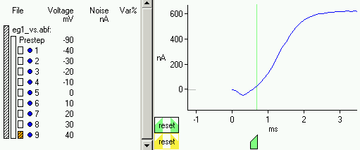

Selecting Data Files
From the Data Menu choose
"Select Data Files".
This will open a window displaying a directory
and its contents.
The example data files for this tutorial are located in the
directory "NEUROFIT\Doc\Tutorial_data".
To move up to a higher directory, click on the name of the currently
displayed directory at the top of the file list; to move down, double-click
on the appropriate subdirectory name in the list.
Once you have navigated to the proper directory,
the Data Files window should look as shown at the right.
If you wish to do this tutorial using abf files, click
on the file "eg1_vs.abf" and select it as
data containing "Varying Step" data by clicking
on the upper transfer button.
Simillarly, click on the file "eg1_vp.abf" and select it as data
containing "Varying Pre-step" data by clicking on the lower
transfer button.
If you wish to do this tutorial using text files, choose
the files "eg1_vs.txt" and "eg1_vp.txt"
rather than the abf files.
(The data in these text files is the same as that in the abf files.)
Once the appropriate file names are listed in the two right regions
of the window,
click on the "OK" button at the bottom.
If you have selected abf files, the data units are determined directly from those files. Skip forward in this tutorial to The Data Description Area.
Specifying Units (Text files only)
After selecting the text files, a window will appear in which you can select the appropriate units for time and current for the first file, "eg1_vs.txt".
In this case, select ms and nA, as shown at the right
and then click on "OK".
This information is used to label the plot axes and the column
heading for the voltage levels in the
Data Description Area.
Units for the voltages will be specified later.
A similar window will then appear for the second file,
"eg1_vp.txt".
The units will default to those chosen for the previous file so just
click on "OK".
Setting Votlage Levels (Text files only)
| At this point, the data will be plotted in the Data Display Panel. There are nine sweeps, each at a different step potential. Click on the "Voltages..." Button for the Varying Step data, located at the top of the panel. |
|
This will bring up a window in which you must specify the
values for the pre-step potential, and the step potential for
each sweep (see
Voltage and Voltage Step Specifications).
For this data, the appropriate values and units are shown in the
figure at the near right.
Similarly, click on the "Voltages..." Button for the Varying Pre-step data, , and enter the values and units for the step potential and the various pre-step potentials as shown in the figure at the far right. |
The Data Description Area
The varying step data files (in this case there is just one, "eg1_vs.abf" or "eg1_vs.txt")
and their sweeps are listed in the
top data description area at the left of the
Data Display Panel.
The prestep voltage for these sweeps is listed below the file name,
in this case, -90 mV, and below that are a list of sweep numbers
and their corresponding step potentials, in this case, -40 through
+40 mV for sweeps 1 through 9.
Simillarly, the varying pre-step file, "eg1_vp.abf"
or "eg1_vp.txt",
and its sweeps are listed in the bottom data description area.
The step voltage for the data from this file is +40 mV and the
pre-step voltages range from -90 to -10 mV for sweeps 1 through 9.
The orange and white rectangular bars to the left of the sweep numbers select which data is being viewed in the plotting area. Initially the leftmost bar is highlighted in orange indicating that all of the data is displayed. The middle bars are for selecting data from just one file (in this case, since we only specified one file for each type of data, the leftmost and middle selection bars select the same data). The small rightmost bars select data from just one sweep. Click on each of these sweep selection bars to view each sweep individually. Do this for both the varying step data, and the varying pre-step data.
The columns labelled "Noise" and "Var%" are output fields which give the noise level for each sweep and the percent contribution to the overall noise scaled variance. These are updated each time a fit is performed.
Zooming In and Out on the Data
Read the help information on Zooming and practice zooming in on different portions of the data. Note that if you are using text files, the start and stop locations of the voltage step have yet to be specified and so by default the step is currently defined to start and end with the first and last data points.If you are using abf files skip forward in this tutorial to Excluding Sweeps of Data.
Specifying the Start and Stop Times for the Voltage Steps (Text files only)
| Zoom out so that all of the data is plotted. At this point, the Data Display Panel should look as shown at the right. For this data, the start and stop of the voltage steps for all sweeps in both files is near 300 ms and 500 ms respectively. In order to be sufficiently accurate in setting the start and stop times of the voltage step, you will need to zoom in on the data first. |
The figure at the right shows a zoom in of the data near the start of the
voltage step for "eg1_vs.txt".
The start of the voltage step is at 312 ms; hold down the control key and
click with the left mouse button on the plot at time=312.
|
| The plot will be re-drawn with the time axis translated so that time zero is at the start of the voltage step, and zoomed back out so that all of the step data is displayed, as shown at the right. Notice that the data prior to the start of the voltage step is now grey. |
Now zoom in near the end of the voltage step as shown at the right.
Hold down the control key and click with the right mouse button on the plot
at time=200. The plot will be re-drawn, and zoomed out
showing all of the step data.
Data before and after the voltage step will be shown in grey.
Do the same procedure to specify the start and end times of the voltage
step for the varying pre-step data, "eg1_vp.txt".
Note that if the start and end times of the voltage step are different for each file (assuming there is more than one file for each type of data) or even different for each sweep within a file, then it is possible to specify these limits by using the same procedure as described above but first selecting the appropriate data by using the data selection bars in the Data Display Panel. |
Excluding Sweeps of Data
For the varying pre-step data, note that the sweeps with pre-step potentials between -50 and -10 mV generate basically no signal. This is because this current is almost completely inactivated by -50 mV. Since there is essentially no signal in these sweeps, we would like to exclude them from the fitting procedure. To the left of each sweep number in the Data Display Panel there is a dot which indicates whether that sweep is to be included (dark blue) or not (light blue). Click on the dots for sweeps 5 through 9 of "eg1_vp.abf"
(or "eg1_vp.txt")
to turn them off.
(Note that the colour of the plotted data matches the toggle
switch.)
Model and Algorithm Specifications
Before looking at the data more closely, we will consider the entries in the Model Specifications Panel and the Algorithm Specifications Panel. To begin, we will assume our data is decaying to zero with a single exponential time course and so we will leave the default specifications for the number of inactivating channel groups and the number of non-inactivating channel groups as 1 and 0 respectively. We will also leave the number of activation gates as the default 1. Later in the tutorial, we will change some of these values. (See Mathematical Model for more information on these three values.)We will also leave all of the default values in the Algorithm Specifications Panel as is.
Specifying the Regions of Data to be Fit
| The fitting regions (shown by the green vertical lines on the plotted data) indicate which part of the included data are to be fit. By default, the fitting regions include all of the data from the start of the voltage step to the end of the voltage step. However, this data has some contamination which we would like to exclude before fitting. In particular, at the start of the voltage step, the current first shows a rapid decline below zero and then a rapid rise to its positive peak value. Such behaviour is impossible according to the model and is a result of experimental error (insufficient clamp, clamp ringing, capacitive surge, etc.). Also, one of the sweeps in the varying pre-step data has an anomolous spike at about 174 ms. |
| The fitting regions are adjusted by moving the green handles at the bottom of the plots. However, before we can adjust them with accuracy, we need to zoom in on the data of interest. First, highlight the leftmost data selection bar for the varying step data, so that all of the sweeps are displayed. Now zoom in on the start of the voltage step by using the left mouse button (press-drag-release) to define a tall narrow box including the data near time zero, as shown at the near right. Continue to zoom until the x-axis limits are approximately -1 ms and +3 ms, and the y-axis limits are approximately -200 nA and +700 nA as shown at the far right. |
| We are now ready to adjust the Fitting Region. Use the left mouse button to move the green slider below the plot of the varying step data so that the start of the fitting region is at about 1.25 ms, approximately the location where all of the sweeps are positive. Note that when the fitting region is changed from its default, the slider is outlined in black and the data selection bar has black horizontal stripes. In addition, the region reset button is also outlined in black. Since the leftmost data selection bar (all sweeps) is highlighted in orange, the fitting region we have just defined will be used for all of the sweeps. However, for our data, it is clear that the sweeps with voltage steps to more depolarized levels become positive sooner than the others. We can specify different fitting regions for each individual sweep. |
|

Suppose we want to make the fitting region for the +40 mV sweep different
than that of the others.
First click on the small selection bar to the left of sweep number
9 to display just that sweep. Note that now the handle of
the fitting region slider is no longer outlined in black because the
fitting region for this sweep is currently at its default value, being
the setting just given to all of the sweeps earlier.
Move the green slider so that the start of the voltage step for this sweep
is at about 0.75 ms.
The slider and reset button are now outlined in black
and the selection bar for sweep 9 has black stripes, as shown at the
right.
Now click on the leftmost data selection bar to again view all of the sweeps. Note that the plot now looks identical to the previous figure above except that the sweep selection bar for sweep 9 has diagonal lines. In particular, the fitting region is shown to start at about 1.25 ms, which is valid for sweeps 1 through 8 but not sweep 9, even though sweep 9 is also plotted. However, the black diagonal lines in the data selection bar for sweep 9 indicate that at least one of the regions for sweep 9 is no longer at its default value. |
|
Click again on the data selection bar for sweep number 9.
Now click on the "reset" button for the fitting region at the bottom
left of the plotting area. The fitting region for sweep 9 should revert
to that of the other data, the black outlines on the handle and the
reset button, and the black diagonal lines on the
selection bar for sweep 9 should all disappear.
We will leave the fitting region at this value with the argument that
likely the current values for all of the sweeps are depressed somewhat in
the first 1.25 ms or so.
Now look at the plot of the varying pre-step data. Again there is contamination at the start of the voltage step. Zoom in near time zero and adjust the start of the fitting region so that it is also at about 1.25 ms, thus eliminating the depressed data at the start. In addition, sweep number 4 has a spike located at about 174 ms which is clearly the result of some type of noise. Although the program does not allow the simple removal of individual data points, we can adjust the fitting region for this sweep to exclude all of the data from the spike to the end of the voltage step. Click on the data selection bar for sweep 4 and then move the rightmost green slider so that it is just to the left of the spike. Now zoom in zoom in near the spike and fine-tune the location of the end of the fitting-region so that it is just before the start of the spike. |
Specifying the Noise Calculation Region
The Noise Calculation Region (shown by the yellow vertical lines on the plotted data) should enclose a relatively flat portion of the data from which an independent estimate of the noise will be made. These regions are adjusted in a similar manner to the fitting regions. (The data in these regions will be fit to a polynomial of degree as specified in the Algorithm Specifications Panel.) The default noise regions (the last tenth of the voltage step) encompass sufficiently flat areas for our data, so we will leave them untouched.Doing a Quick Fit of the Data
We are now ready to begin fitting the model to the data.
The
Model Parameters Panel
lists all of the parameters in the model.
To the left of each parameter name is a checkbox
which specifies whether the parameter should be fit (default) or held
constant at its initial value.
The full non-linear fit requires us to enter initial values for all
of the parameters listed in the
Model Parameters Panel.
However, reasonable initial values can be easily generated by
the "Quick Fit" option which only requires an initial value for
the reversal potential,
Erev and
any parameters that are held constant.
Enter the value -80 in the initial value box for
Erev.
|
|
Now click on the dark green
"Quick Fit" Button.
The linear quick fit estimation procedure generates fitted
values for all of the parameters and displays the resulting fitted
curves in red plotted over-top the blue data.
The curves show that the
fit, although not great, is a good first guess.
The Fitting Results Panel displays
the total number of data points
within the fitting regions, the number of fitted parameters,
and the noise scaled variance of the fit.
(The number of function and jacobian evaluations is only applicable
to the Full Fit algorithm.)
The noise scaled variance is a measure of how well the fit performed compared
to the noise in the data.
In this case, the variance due to the fit is more than one thousand times
the noise level.
The noise level and the percentage
contribution to the overall variance for each sweep is listed
under the columns "Noise" and "Var%" respectively in the
Data Display Panel.
Note that minor differences in the fitting regions may make your curves slightly different from those shown here. |
Doing a Full Fit of the Data
| Click on the transfer button between the fitted and initial value columns at the top of the Model Parameters Panel. This will transfer all of the fitted values to the initial values. (It is also possible to transfer values for specific parameters only by using the transfer buttons in the appropriate row.) |
| Since we now have reasonable initial values for all of the parameters, click on the light green "Full Fit" Button. The fitting process will take perhaps about 30 seconds, depending on the speed of your machine. Fitted values and standard errors are displayed in the Model Parameters Panel (part of which is shown at the right) and the message window in the Fitting Results Panel will give some information on the convergence of the algorithm. Again, due to minor differences in the fitting regions your fitted values may be slightly different from those shown here. |
|
The fitted curves and part of the
Fitting Results Panel are shown at
the right.
In addition to the information displayed in the Quick Fit case,
the number of function and jacobian evaluations required
for the non-linear algorithm to converge are also shown.
The noise scaled variance has reduced to 145.19, and the sweeps with a low pre-step potential and high step potential contribute to it the most. Although this full fit is substantially better than the linear (quick) fit, it is still not good enough. It seems a single exponential decay does not adequately capture the features of the data. Multi-exponential decay time courses can be obtained from the mathematical model by specifying more than one group of inactivating channels. That is, each group of channels has its own time constants of inactivation. |
A Word About the Noise Scaled Variance
| Theoretically, a value of 1.0 for the overall noise scaled variance of the fit is as good as one can expect to obtain, indicating that the variance between the fitted curves and the data is the same size as the noise. A value lower than 1.0 would be possible if the noise was significantly over-estimated but is unlikely unless the data within the noise calculation regions are not well approximated by a low order polynomial. This could be rectified by increasing the degree of the polynomial (see Algorithm Specifications Panel) and/or shortening the noise calculation regions (especially the sweeps which have large computed noise levels). It is more typical to have values of the variance larger than 1.0, however, values significantly larger than 1.0 do not necessarily indicate a very poor fit. For example, there may be one portion of the data that does not behave according to the model and consequently, although the curves fit the data very well in most places, the variance in one place is significantly large. Such a scenario would be evident by a large percentage contribution to the variance in the sweep where the data does not behave like the model. |
Adjusting the Model Specifications
| Go to the Model Specifications Panel and click on the gray box for the number of inactivating channel groups, nh. This will bring up a small window in which this number can be updated. Set the value of nh to 2 and click on "OK". |
Notice that some new parameters are now listed in the
Model Parameters Panel; in particular:
f1, which represents the fraction of channels in
inactivating group 1 has been added
(the fraction of channels in inactivating group 2 is by definition
1-f1),
and there are now two inactivating time constants at
each voltage level rather than just one.
|
Before doing another full fit, we must enter initial values for these
new parameters.
One option would be to do this manually, however, the current values
of the parameters Th1 which were obtained
by fitting a model with just one inactivating channel group
are likely part way between the values of Th1
and Th2 which we would expect from a fit
to a model with two channel groups.
Likely if we simply entered larger values for the
Th2 parameters, the full fit algorithm would converge
to a reasonable solution, but it may be necessary to reduce the
initial values for the Th1 parameters.
Further, it is not immediately clear how much smaller and larger the
Th1 and
Th2 parameters should be.
A second option is to again use "Quick Fit" to roughly re-fit the
data to this new model; this is generally the faster option.
|
Doing a Second Quick Fit
|
Click on "Quick Fit" and analyze the fitted curves and values as
shown at the right.
From the plots it is clear that this time
Quick Fit did a better job at following the shape of the decaying
curves than either Quick Fit or Full Fit managed in the
case with one inactivation time constant.
Nonetheless, the noise adjusted variance of this fit is 226.124, which
is larger than that for Full Fit in the previous case.
This is largely due to the fact that although the shapes here are better, the
amplitudes of most of the curves are too low.
The fitted values for the |
Doing a Second Full Fit
| Click on the transfer button at the top of the column of parameters to transfer all of the fitted values to initial values. Now click on the "Full Fit" Button. As seen at the right, the fit this time is very good, closely tracking the double exponential decay. The noise scaled variance is 21.8, a reasonable value. |
 Zoom in on the first about 20 milliseconds of data for the
varying step potential data, as shown at the right.
You will see that curves do not agree well near the start of
the voltage step until a little beyond the peak.
The fitted curves rise too rapidly.
A delay in the activation can be incorporated in the
Mathematical Model by increasing the
number of independent activation gates, p, from 1.
Zoom in on the first about 20 milliseconds of data for the
varying step potential data, as shown at the right.
You will see that curves do not agree well near the start of
the voltage step until a little beyond the peak.
The fitted curves rise too rapidly.
A delay in the activation can be incorporated in the
Mathematical Model by increasing the
number of independent activation gates, p, from 1.
|
Adjusting the Model Specifications Again
| Go to the Model Specifications Panel and change the number of independent activation gates from 1 to 2. |
Doing a Third Full Fit - Deciding Significance in Variance Reduction
|
Now click on the transfrer button at the top of the column of parameters
to set the initial values to those last fit by Full Fit. Then click
on "Full Fit" again.
As shown at the right, the beginning part of the voltage step
is better fit with 2 independent activation gates.
The variance has reduced significantly from 21.8 to 13.05.
In general, deciding whether a particular decrease in the variance is statistically significant is a complicated question. The ratio of two variances of fit, F = var1 / var2, has an F-distribution with degrees of freedom df1 and df2, where dfi = number of fitted points minus number of fitted parameters for fit i (assuming the variance is due to Gaussian noise). This statistic can then be used to decide significance based on a pre-determined level, say 5%. However, before we attempt to increase p further let us look at the fitted values of the parameters obtained so far. |
Looking at the fitted values we see that incresing p
to 2 has predictably caused V2m to
decrease,
sm to decrease in magnitude, and all
the time constants of activation to decrease.
More surprisingly, the values of Erev and gmax
have both changed significantly.
Changing p should not have a significant effect on
Erev and gmax,
thus we should suspect that this data does
not contain sufficient information for isolating these two parameters.
This is in fact known to be the case. The basic problem is that
the reversal potential is relatively distant from the voltage levels at
which substantial currents are recorded, hence small changes in
Erev have very similar effects on the model curves
as small changes in gmax.
If we are not satisfied with a reversal potential of -65 mV, then one
option is to hold the reversal potential fixed at some value obtained
from other measurements, say -80 mV.
|
Holding a Parameter Fixed and Doing a Fourth Full Fit
 Click on the check box to the left of the
Click on the check box to the left of the Erev parameter
name in the
Model Parameters Panel to specify that
this parameter should be held fixed at its initial value.
Click on the transfer button at the top of the parameters column
to update all the initial values, and then manually change
the initial value of Erev to -80 mV.
|
Now click on "Full Fit" again.
The results are very similar to the previous fit and the variance
has risen just slightly from 13.05 to 13.277.
(The F-statistic 13.277/13.05 is insignificant at the 5% level.)
The fact that there is very little change in the overall fit
when Erev is changed from -65 to -80 mV is another
indicator that the data is not sensitive to changes in this parameter
and can compensate for them by changing gmax and to
a lesser extent the other parameters.
|
Deciding on an Optimal Value for p
You should now do the following sequence of steps to show how
changes in the number of independent activation gates, p, can
affect the quality of the fit:
Since for this example there are 25552 points fitted (your number may be slightly different due to small differences in the fitting regions) and there are 33 varying parameters, the ratio of the variances is F-distributed with 25519 and 25519 degrees of freedom. For two consecutive values of p we can calculate the probability of seeing this ratio under the null hypothesis that the fits are equally good. The last row of the above table gives this value (the "P-value") for the value of p in the column compared to the previous value of p. Using a two-sided F-test at the 5% level, we find that increasing p by one gives a statistically significant better fit up to p=7; any further unit increases in p are not statistically significant at this level. (Indeed, increasing p from 9 to 10, increased the variance.) Nonetheless, even at p=3, the fit is very good, and one may validly decide to keep p at this value due to historic considerations. |
Saving the Project and a Report
|
Selecting "Save" or "Save As" from the
File Menu
will save your current settings and values in a NEUROFIT project file
(extension "nfp"). This file can later be opened from NEUROFIT and
further processing of the data completed. This file is in a pre-defined
format readable by the NEUROFIT software and should not be
editted.
Selecting "Save Report" from the File Menu will create a readable formatted text file giving information on the data and the fitting results. This file is intended for viewing/printing. |